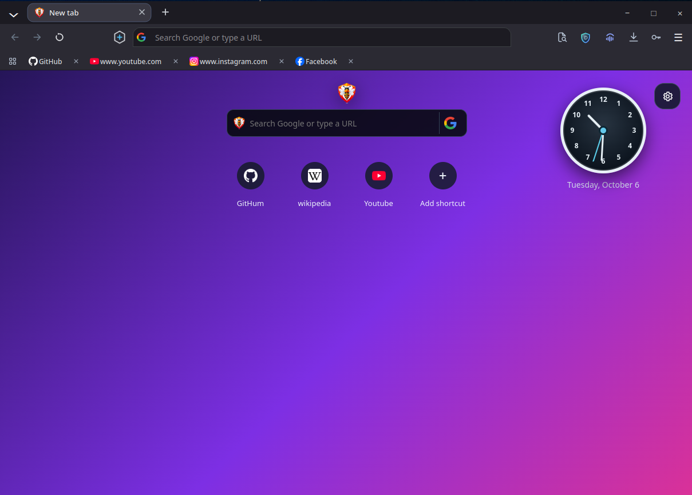
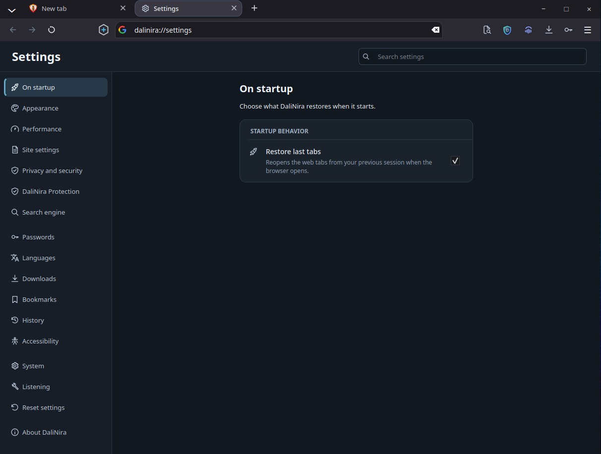
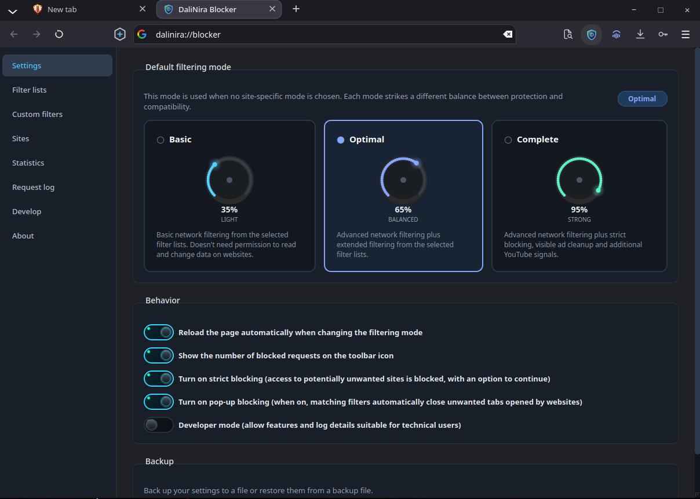
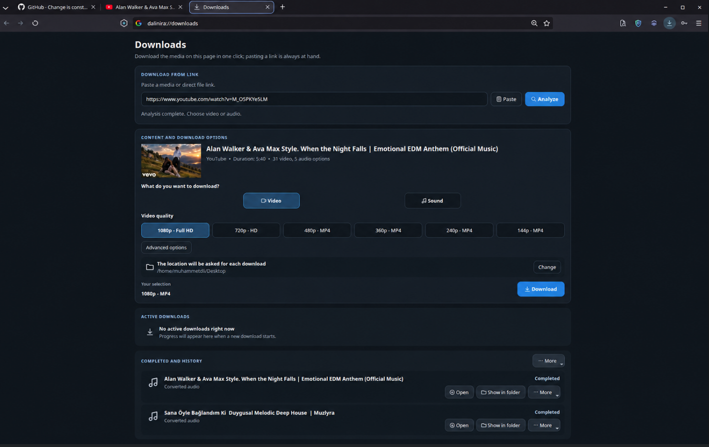
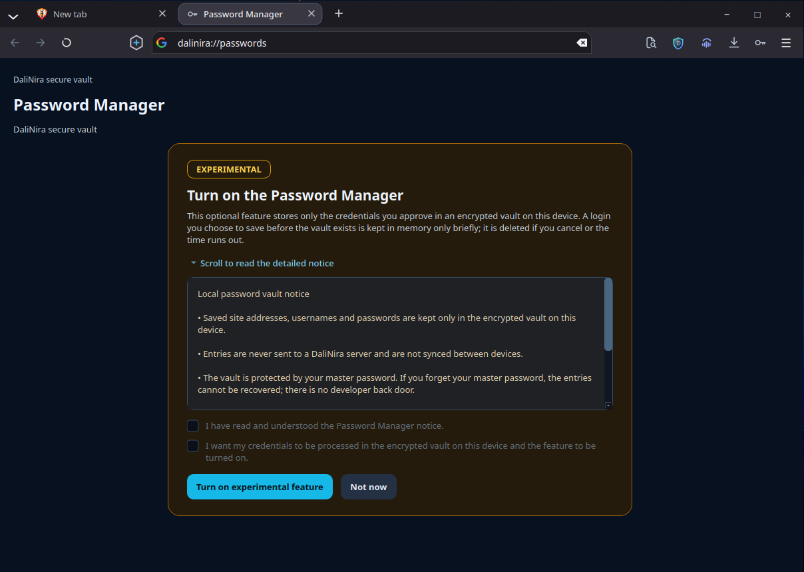
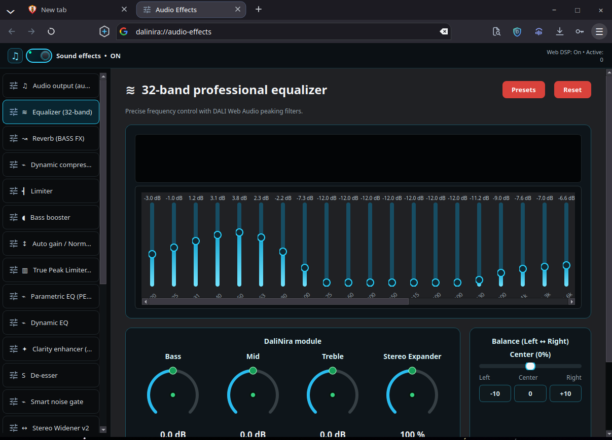
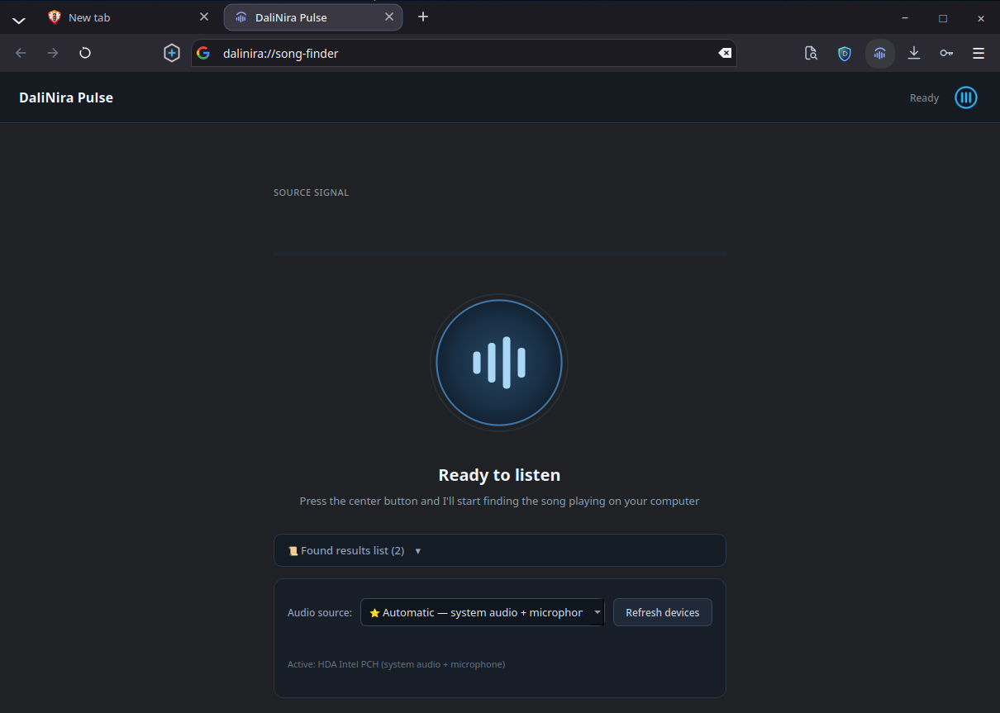

Chromium ve WebKitGTK
Motoru kurulum sırasında ya da daha sonra Ayarlar'dan seçin. Her motorun kendi sekmeleri ve oturumu vardır; yer imleri ve ayarlar ortaktır.
DaliNira, C++20 ve Qt 6 ile yazılmış yerel bir Linux masaüstü tarayıcısıdır. Chromium ya da WebKitGTK ile çalıştırın; arayüz, reklam ve takipçi engelleme, çeviri ve sekme uyutma ikisinde de aynı şekilde çalışır.

DaliNira, çoğu kişinin ayrı eklentilerle kurduğu araçları yerel bir masaüstü uygulamasına entegre eder.
Motoru kurulum sırasında ya da daha sonra Ayarlar'dan seçin. Her motorun kendi sekmeleri ve oturumu vardır; yer imleri ve ayarlar ortaktır.
EasyList, EasyPrivacy ve bölgesel listelerle çalışan yerel filtre motoru; kozmetik filtreleme, izleme parametresi temizleme ve bağlantı yönlendirmesi atlama.
Varsayılan olarak HTTPS, Global Privacy Control, parmak izi gürültüsü ve üçüncü taraf çerez engelleme.
Sayfaları Google, Google Cloud, DeepL veya LibreTranslate ile yerinde çevirin. Açılır pencere sayfayı hiçbir zaman engellemez.
Etkin olmayan sekmeler belleği boşaltmak için iki aşamada uyutulur. Kaydedilmemiş form verisi olan sekmeler otomatik olarak boşaltılmaz.
Solda veya sağda dikey yan sekmeler ya da yüzen kenar çubuğu. Yeni Sekme sayfasında açık kalır, web sitelerinde gizlenir ve pencere kenarında geri gelir; açık tutmak için sabitleyin. İngilizce, Türkçe, Arapça ve Fransızca.
Devam ettirilebilen parçalı paralel indirmeler ve AES-256-GCM ile yerel olarak şifrelenen parola kasası.
Web medyası için 1.757 AutoEQ kulaklık ön ayarına sahip 32 bantlı ekolayzer ve Pulse şarkı tanıma.
Tarayıcı kısayollarını Ayarlar'dan değiştirin. Çakışmalar algılanır, varsayılanlar tek tek veya hepsi birden geri yüklenebilir ve değişiklikler iki motorda da hemen uygulanır.
DaliNira 8.0, Qt WebEngine üzerinden Chromium ile ya da WebKitGTK ile çalışır. İkisi de aynı DaliNira arayüzünü kullanır.
Motor değiştirildiğinde DaliNira yeniden başlar ve o motorun kendi sekmelerini açar. Otomatik eşlik testleri aynı senaryoları iki motorda da çalıştırıp sonuçları karşılaştırır.

Tüm ekran görüntüleri Linux üzerinde çalışan DaliNira 8.0'dan alınmıştır.
DaliNira engelleyicisi filtre listelerini yerel olarak uygular, boş reklam alanlarını gizler ve utm_*, fbclid, gclid gibi izleme parametrelerini temizler.

Sürdürme ve yeniden deneme destekli parçalı paralel indirmeler ve desteklenen sitelerde medya analizi.

İsteğe bağlı, deneysel kasa onayladığınız girişleri AES-256-GCM ve PBKDF2-HMAC-SHA256 anahtarıyla şifreler.

Web sesini 32 bantlı ekolayzer, kompresör, limiter ve stereo genişletici üzerinden geçirin; 1.757 AutoEQ kulaklık ön ayarı dahildir.

Pulse, bilgisayarınızda çalan şarkıyı tanır. Ses parmak izini yerel olarak oluşturur ve Shazam'ın tanıma hizmetine yalnızca bu parmak izini gönderir.

Pazarlama vaatleri yerine somut tasarım kararları.
Geçmiş, yer imleri, parolalar, ayarlar ve ön ayarlar bilgisayarınızdaki kullanıcı profilinizde saklanır.
DaliNira oturum açmayı gerektirmez ve yerleşik kullanım telemetrisi içermez.
Arama önerileri, çeviri, Pulse tanıma ve filtre listesi güncellemeleri yalnızca o özelliğin ihtiyaç duyduğu hizmete bağlanır.
Kimlik bilgileri AES-256-GCM ve PBKDF2-HMAC-SHA256 anahtarı ile yerel olarak şifrelenir ve hiçbir zaman eşitlenmez.
Bu site analiz aracı, çerez, harici yazı tipi veya betik yüklemez ve katı bir İçerik Güvenliği Politikası kullanır.
Kaynak kodun tamamı GNU Genel Kamu Lisansı v3.0 altında herkese açıktır.
DaliNira Browser GitHub'da açık olarak geliştirilir. Kodu inceleyin, kendiniz derleyin, hata bildirin veya katkıda bulunun.
Kaynak kodu GitHub'da görüntüleDaliNira, Linux x86_64'ü destekler. Sürümler Debian, Ubuntu, Fedora ve Arch Linux için ve taşınabilir bir arşiv olarak derlenir; bir sürüm yayımlanmadan önce her yerel paket temiz bir kapsayıcıda kurulup denetlenir.
WebKitGTK ile medya oynatmak için GStreamer eklentileri gerekir; paketler bunları bağımlılık olarak kurar.
yay -S dalinira-bin
curl -sL https://muhammed-dali.github.io/DaliNira-Browser/dalinira.gpg | sudo pacman-key --add - && sudo pacman-key --lsign-key BC741FD0AC804351B0DDBB86FDFEC60C11202588 && curl -fsSL https://muhammed-dali.github.io/DaliNira-Browser/dalinira.repo | sudo tee -a /etc/pacman.conf >/dev/null && sudo pacman -Syu dalinira